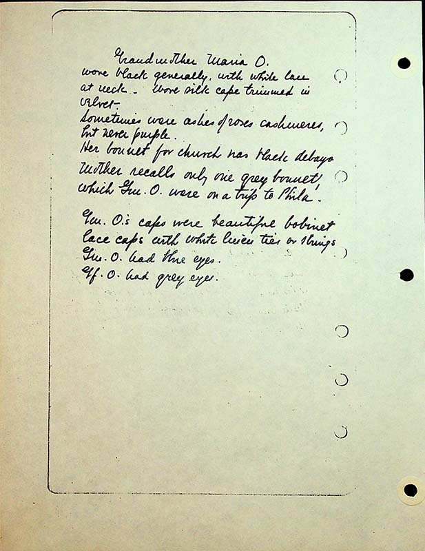

Grandmother Maria O. wore black generally, with white lace at neck- wore silk cape trimmed in velvet.
Sometimes wore ashes of roses cashmere, but never purple.
Her bonnet for church has black delays.
Mother recalls only one gray bonnet, which Grm. O. wore on a trip to Phila.
Gm.O.’s Caps were beautiful bobinet lace caps with white linen ties or strings.
Gm.O. Had blue eyes.
Gf.O. had grey eyes